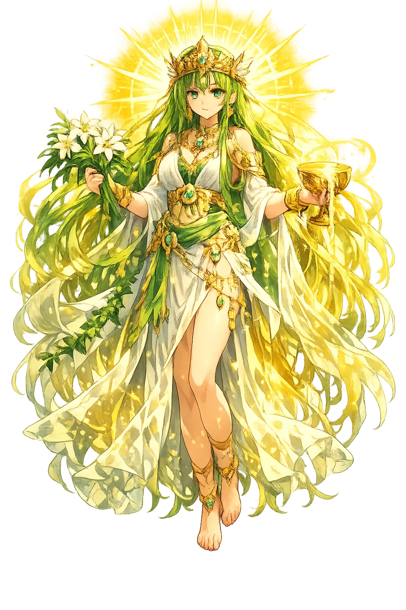
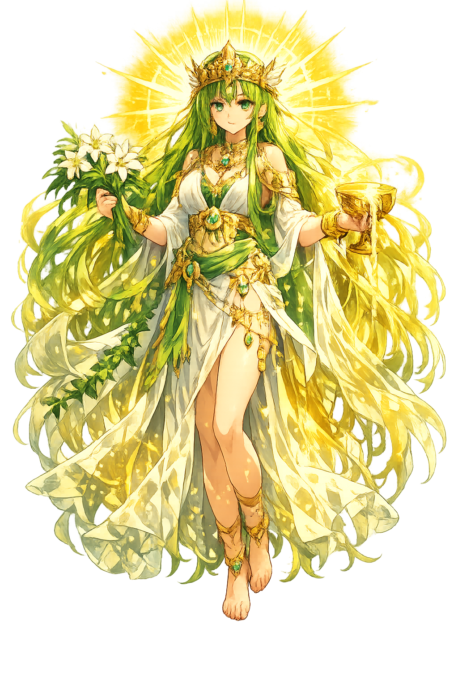

The Authentic Orthography
Immortality, Plants · Immortality, Plants · Immortality

Unicode restoration and ASCII comparison
𐬀𐬨𐬆𐬭𐬆𐬙𐬁𐬙
The name in its original Zoroastrian form. Amərətāt (𐬀𐬨𐬆𐬭𐬆𐬙𐬁𐬙) is attested in the source tradition — “Immortality”. Its macron-length vowels carry the full phonetic and orthographic weight of the source tradition.
ameretat
Reduced to plain ameretat, the name loses everything that made it specific: macron-length vowels. What remains is an ASCII string that machines can parse but that no longer speaks with its original voice.
Amərətāt
The Unicode restoration recovers what ASCII flattened. Amərətāt restores macron-length vowels, returning the name to its original written dignity. The domain encodes to Punycode, but the browser displays the truth.
Amərətāt.com → xn--amrtt-iwa91vba.com
The non-ASCII characters in Amərətāt are encoded while the ASCII remains visible. To the DNS, it is Punycode. To humanity, it is Amərətāt.
How Amərətāt travels from ancient script to the modern URL
How Amərətāt was spoken
Plants, Longevity, and the Amesha Spenta
Amərətāt is the Amesha Spenta of immortality and plants in Zoroastrianism. She embodies the divine promise that the soul endures and that the earth's vegetation sustains life. Where her sister Haurvatāt guards water and wholeness, Amərətāt guards the plant kingdom and the final victory over death. She is the green hope at the heart of Zoroastrian cosmology.
Every tree, herb, and grain falls under her protection as the divine patron of vegetation.
Her name means 'non-death'; she is the spiritual force that promises life beyond death.
She and Haurvatāt (wholeness/health) are often worshipped together as complementary gifts.
At Frashokereti, Amərətāt's domain will flourish in a world without death or decay.
Stories of Amərətāt
Amərətāt does not have a long narrative mythology of her own. She is one of the seven Holy Immortals who surround AhuraMazdā and help govern the created world. Her stories are embedded in cosmology, ritual, and eschatology rather than in heroic adventure.
In Zoroastrian cosmogony, AhuraMazdā creates the plant world — the fourth of the seven creations (sky, water, earth, plants, cattle, man, and fire) — and assigns its guardianship to Amərətāt. Angra Mainyu (Ahriman) responds by sending drought, locusts, and winter to wither the green world. The struggle between growth and decay is therefore a cosmic battle in which human agriculture participates.
At Frashokereti, the final renovation, the dead will be resurrected in perfected bodies that no longer age, sicken, or die. Amərətāt's gift of immortality will be realized not as escape from the body but as the body's transformation. The white Haoma, the paradisal plant, will be offered to the righteous to seal their eternal life.
In the daily Yasna ritual, the sacred Haoma plant is pressed and offered to the divine. This rite unites Amərətāt's domain (plants) with Haurvatāt's domain (water) and the priest's prayer, creating a microcosm of the divine order. Through Haoma, worshippers participate in the immortality that Amərətāt represents.
Amərətāt asks us to see a tree as more than timber and a field as more than calories. Plants are the visible form of immortality: they transform sunlight, water, and soil into life that outlasts the individual seed. In a time of deforestation and agricultural crisis, her message is urgent: to harm the plant world is to attack the very possibility of sustained life. To honor Amərətāt is to plant, to protect, and to hope that what grows today will outlive us.
Enter Extended Lore